Как читать авторский курс и нормативные материалы
Это учебные материалы, а не заключение о соответствии конкретного продукта. Организационные модели курса отделяйте от терминов стандарта: ППК в опубликованном проекте — машиночитаемый перечень, а живой реестр его версий является практикой сопровождения. Термин OSA в разных материалах имеет разный охват. Статус и обязательность нормативного документа проверяются отдельно; проект КАПО опубликован как проект первой редакции.
М00. Ориентация в курсе и карта решений
Это вводный, навигационный модуль. Он не учит инструментам — он учит выбирать: с каким вопросом вы пришли, нужен ли тут SCA или OSA, какой артефакт должен лежать на выходе и кто за него отвечает. После М00 любой следующий модуль читается не «по порядку», а под конкретную задачу.
Зачем этот модуль
- Снять путаницу «SCA = OSA = сканер»: показать, что это разные вопросы с разными выходными артефактами.
- Дать карту решений — дерево «вопрос → дисциплина → артефакт → роль».
- Объяснить устройство vault: где конспект, где практика, где нормативка, где шаблон, как связаны
[[...]]. - Помочь спланировать персональный маршрут (быстрый старт vs полный трек).
Карта решений в одну картинку

Материалы модуля
- 01 Конспект — устройство курса, полное дерево решений, роли, маршрут.
- 02 План занятия — 90 минут вводного занятия.
- 03 Практическая работа — построить карту решений для своего продукта.
- 04 Контрольные вопросы — самопроверка навигации.
- 05 Что проверять на проекте — чек-лист «знает ли команда свою карту».
Куда вести дальше (входы в трек)
| Ваш вопрос | Следующий модуль |
|---|---|
| Что вообще такое SCA/OSA, где границы | М01. Термины и границы |
| Нужен машинный состав продукта | М02. SBOM и ППК |
| Ищем уязвимости, ведём VDR/VEX | М06. VDR/VEX |
| Лицензионная чистота, юр. заключение | М07. Лицензии |
| Контроль внешних поступлений | М08. OSA и цепочка поставки |
Связи
- Навигация по курсу: Главная карта · Карта курса · Карта практик
- Практики на выходе: П29. Readiness dashboard · П36. Итоговый мини-проект
- Регламент-зонтик: Регламент композиционного анализа ПО · RACI для SCA/OSA процесса